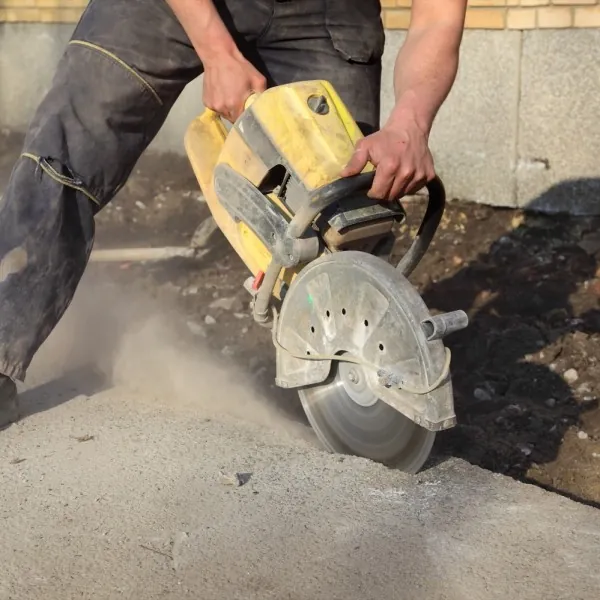

Rivning · sanering · Trondheim
Din rivningsekspert i Midt Norge.
Vi utfører jobben trygt og effektivt – alt innen asbestsanering, PCB-sanering, sopp- og råtesanering, betongsaging, kjerneboring, wiresaging, riving, meisling, rehabilitering og branntetting.
TrygtOg effektivt
KompetanseI alle fagområder
TrondheimTempevegen 25
Org.nr894 969 342
Tjenester
Bredt utvalg tjenester
Alle våre ansatte har flere års erfaring og nødvendig kompetanse for våre fagområder.
Slik jobber vi
Trygt og effektivt
Vi planlegger jobben med sikkerhet, HMS og ryddig fremdrift. Fagområdene krever kompetanse – og det har vi.
- Kartlegging og plan.
- Sikker utførelse.
- Rydding og dokumentasjon.

RivingOg meisling
SaneringAsbest og PCB
SagingBetong og wire
BranntettingGjennomføringer
Trenger dere hjelp?
Vi står klare – ta kontakt for en prat om oppdraget.